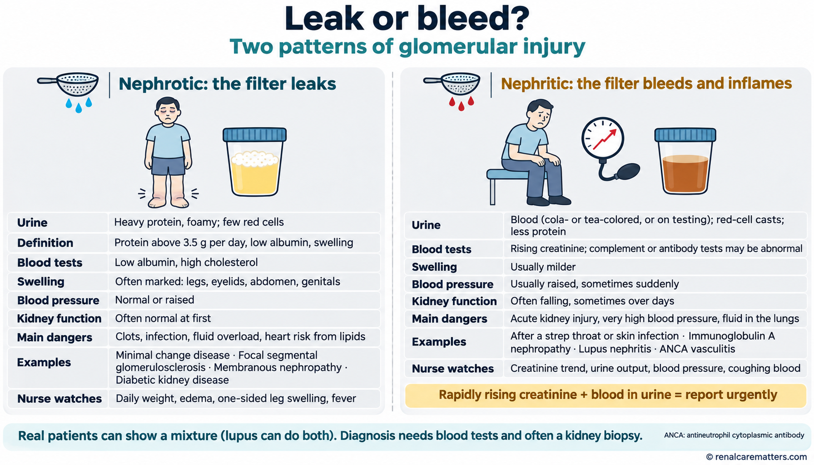
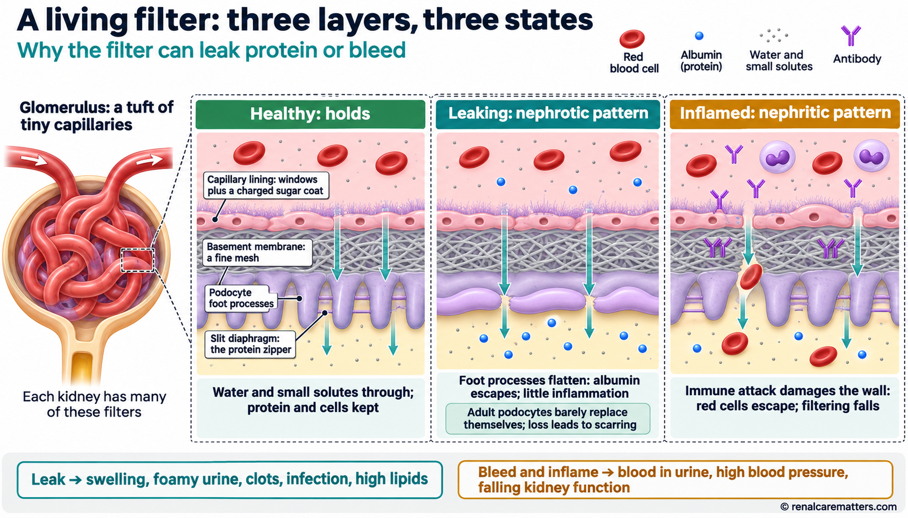
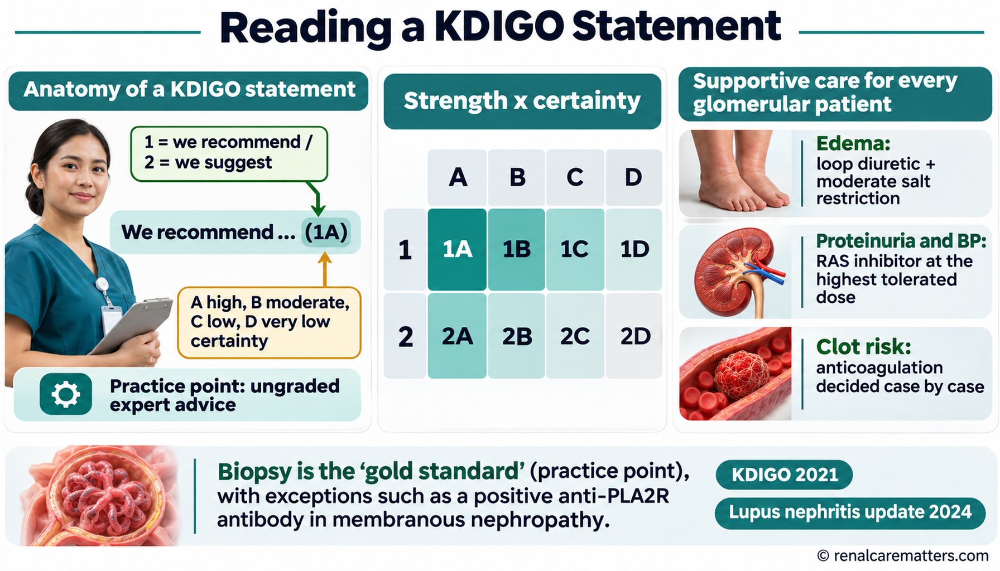
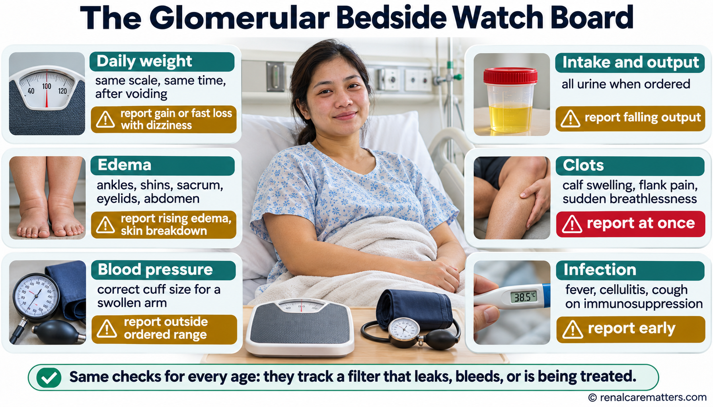
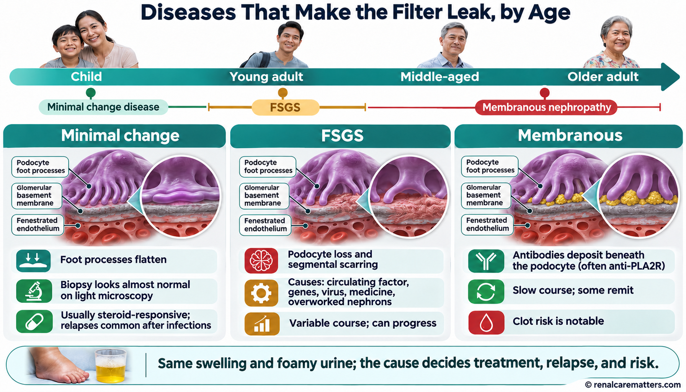
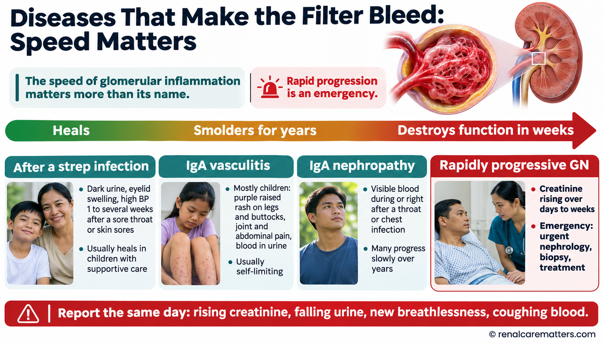
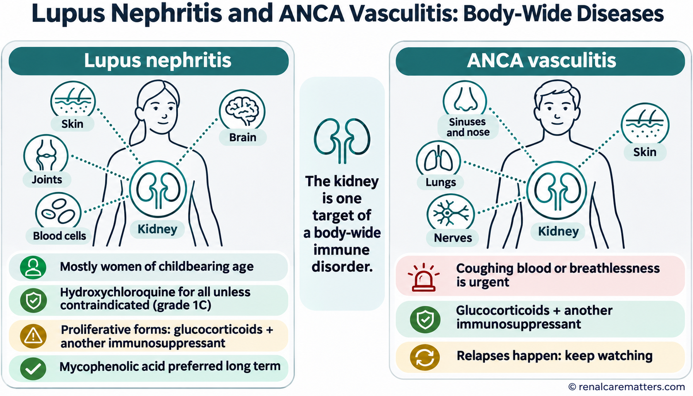
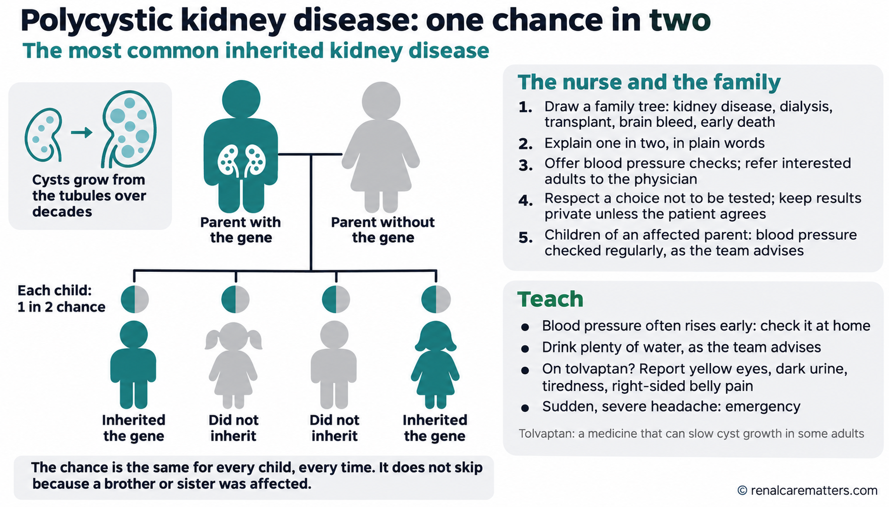
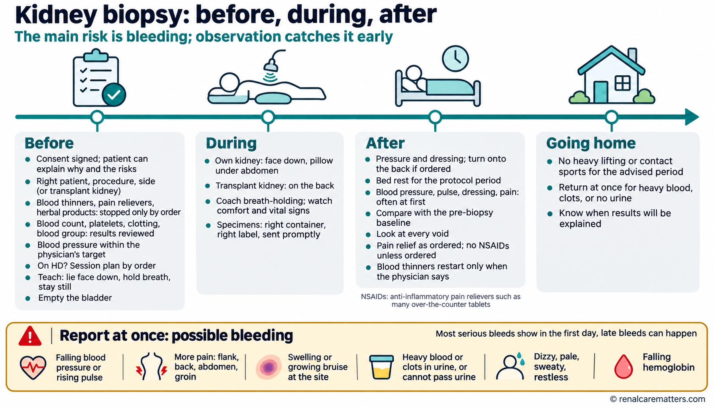
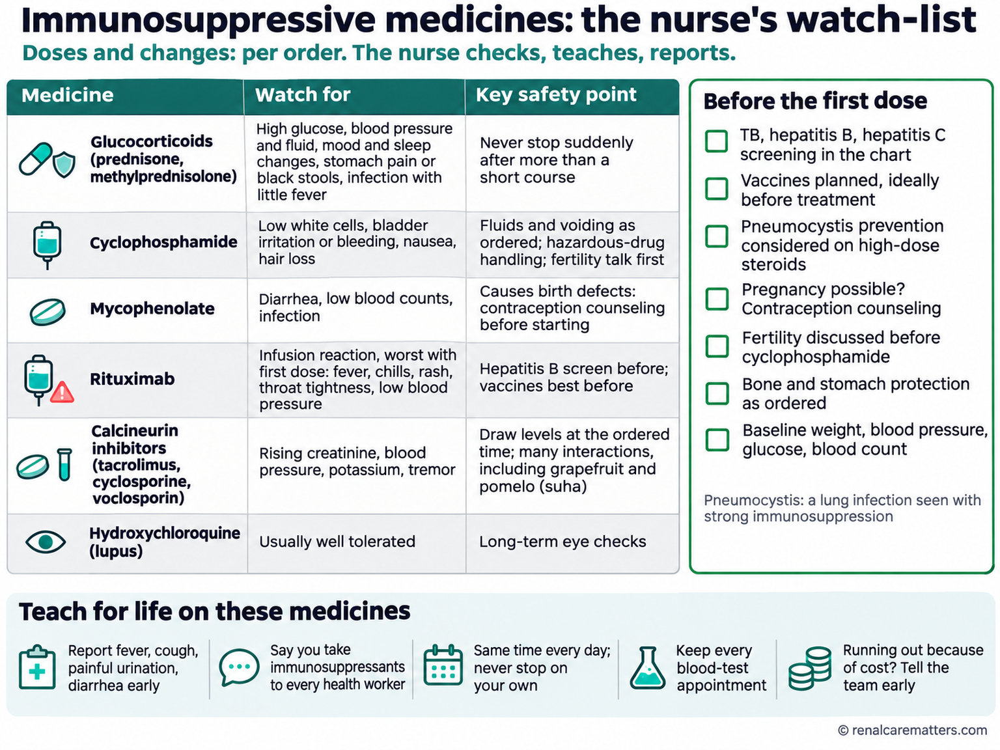

After this module you should be able to
- Explain how the glomerular filtration barrier normally holds back protein and blood cells, and how injury produces either a nephrotic or a nephritic pattern.
- Link the complications of nephrotic syndrome (edema, thrombosis, infection, high blood lipids) and of nephritis (high blood pressure, hematuria, falling filtration) to their mechanisms.
- Summarize what current Kidney Disease: Improving Global Outcomes (KDIGO) guidance says about diagnosing and treating glomerular disease, lupus nephritis, and antineutrophil cytoplasmic antibody vasculitis, using calibrated language.
- Carry out the nursing monitoring of a patient with glomerular disease: daily weight, edema, blood pressure, urine testing and collection, signs of thrombosis and infection, and safe handling of immunosuppressive treatment.
- Distinguish the main causes of nephrotic and nephritic presentations in children and adults, and recognize rapidly progressive glomerulonephritis as an emergency.
- Describe how lupus nephritis, antineutrophil cytoplasmic antibody vasculitis, diabetic kidney disease, and polycystic kidney disease affect the kidney, and the nurse's role in monitoring, teaching, and family referral.
- Prepare a patient for kidney biopsy, monitor afterward, and recognize and report bleeding.
- Monitor for the adverse effects of glucocorticoids, cyclophosphamide, mycophenolate, rituximab, and calcineurin inhibitors, and support infection prevention, vaccination, and contraception counseling.
A living filter that can leak or bleed
Module 1 described the glomerulus as a filter that throws almost nothing away. Every day it lets through a huge volume of water and small solutes. Blood cells and almost all protein stay in the blood. This module asks what happens when that filter is damaged.
Picture a fishing net that a crew mends every night. The crew keeps the mesh tight. If the crew falls sick, the holes widen and small fish slip through. If someone slashes the net, it tears. The glomerulus is the net, and its cells are the crew.
The picture has a limit. A net is passive, and a glomerulus is not. It is built of living cells that the immune system can attack, that can heal, and that can scar. The same immune defense that protects the body can be what injures the filter.
A living filter fails in two main ways.
- It can leak. The fine slits that hold back protein open up. Albumin pours into the urine, while the filter itself looks quiet: little inflammation, few red cells, and often a normal filtration rate at first. The patient swells, the urine foams, and the blood thickens with fats and clotting proteins. This is the nephrotic pattern.
- It can bleed and inflame. Immune attack damages the capillary walls. White cells move in, red cells escape into the urine, and the swollen glomeruli filter less. Blood pressure rises, urine output may fall, and kidney function can drop within days. This is the nephritic pattern.
| Nephrotic pattern: the filter leaks | Nephritic pattern: the filter bleeds and inflames | |
|---|---|---|
| Main urine finding | Heavy protein, foamy urine; few red cells | Blood (cola- or tea-colored, or seen only on testing), red-cell casts; less protein |
| Blood findings | Low albumin, high cholesterol | Rising creatinine; complement or antibody tests may be abnormal |
| Swelling | Often marked: legs, eyelids, abdomen, genitals | Usually milder, from salt and water retention |
| Blood pressure | Normal or raised | Usually raised, sometimes suddenly |
| Kidney function | Often normal at first | Often falling, sometimes over days |
| Main dangers | Clots, infection, fluid overload, long-term heart risk from lipids | Acute kidney injury, very high blood pressure, fluid in the lungs |
Two more corrections. Real patients often show a mixture: lupus can leak and bleed at the same time. And many diseases that end in kidney failure, such as diabetes, injure the glomerulus slowly through pressure and metabolic stress, not immune attack. They produce protein leak and scarring over years. The two patterns are a starting point for thinking, not a diagnosis. The diagnosis usually needs blood tests and often a kidney biopsy.
Most of these patients are investigated and treated over weeks to years, with long stretches of routine checks. A few become dangerously ill within hours, from a clot, an infection, or a filter that is failing fast. Your work is to keep the routine checks exact, so that the dangerous change stands out when it comes.
Where this module fits. Module 1 taught urinalysis, creatinine, and the urine albumin-to-creatinine ratio. Module 2 taught why albuminuria predicts progression and how blood pressure control and kidney-protective medicines slow chronic kidney disease (CKD). Module 4 taught acute kidney injury (AKI), including red-cell casts as a sign of glomerular inflammation. This module does not repeat them. It explains why the glomerulus leaks or bleeds, which diseases cause each pattern, and what you watch for while these patients are investigated and treated.
Ask of every patient with glomerular disease: is the filter leaking, bleeding, or both? The answer tells you which complications to look for first.

The filtration barrier, immune injury, and why the complications follow
Three layers, one barrier. Blood in a glomerular capillary is separated from the urinary space by three layers. They work together.
| Layer | Structure | What it holds back | What injures it |
|---|---|---|---|
| Capillary lining (endothelium) | Thin cells full of open windows, coated with a negatively charged sugar layer | Blood cells; some protein through charge | Immune complexes, inflammation, very high pressure, blood-vessel diseases |
| Glomerular basement membrane | A dense mesh of structural proteins shared by the two cell layers | Larger proteins by size and charge | Antibodies against the membrane itself; immune deposits; thickening in diabetes |
| Podocytes | Octopus-like cells whose interlocking “foot processes” wrap the capillary; the narrow slits between the feet are bridged by a protein zipper, the slit diaphragm | Albumin and other mid-sized proteins: the final and most selective barrier | Circulating factors, antibodies, viruses, toxins, genetic defects, overwork in a shrinking kidney |
Podocytes are the key to the nephrotic pattern. In adults they can barely divide to replace themselves. When they are injured, the foot processes flatten and the slit diaphragm breaks down, so albumin escapes. If enough podocytes are lost, the bare membrane sticks to the surrounding capsule and the glomerulus scars. That is how a disease that begins as a pure leak can end as loss of kidney function.
How the immune system injures a glomerulus. Most glomerular diseases are named for what the biopsy shows. The mechanisms fall into a few groups.
- Immune complexes are clumps of antibody stuck to antigen. They are trapped in the capillary walls or formed there. They switch on complement, a cascade of blood proteins that attracts white cells and punches holes in cells. Lupus nephritis, the kidney disease after a streptococcal infection, and immunoglobulin A nephropathy work this way. Complement levels in the blood may fall because complement is being used up.
- Antibodies against the basement membrane itself attack the filter directly. They can attack the lung too, which shares the same protein. This disease is rare but one of the most urgent in nephrology.
- Antineutrophil cytoplasmic antibodies activate white cells called neutrophils, which then damage the small blood vessels they pass through. The biopsy shows few immune deposits, but the capillaries break and bleed.
- Podocyte-targeted injury comes from antibodies against podocyte proteins (as in membranous nephropathy) or from circulating factors not yet fully identified (as in minimal change disease). It produces leak with little inflammation.
Why the nephrotic complications follow. Each one traces back to protein leaving the body, and to the body’s attempt to compensate.
| Complication | What breaks | What you may notice |
|---|---|---|
| Edema | Two forces act together. The kidney holds on to sodium in its collecting ducts, so salt and water are retained even when the circulation is full. Low albumin weakens the pull that keeps water inside the vessels, so the retained fluid seeps into the tissues. In some patients, especially children with very low albumin, the circulation is actually underfilled | Rising weight, pitting edema of the legs and back, swollen eyelids in the morning, abdominal swelling, scrotal or labial swelling, breathlessness if fluid collects around the lungs |
| Thrombosis | Small anticoagulant proteins such as antithrombin are lost in the urine. The liver, working hard to replace albumin, also makes more large clotting proteins. Platelets become stickier. Diuretics concentrate the blood, illness reduces mobility, and glucocorticoids add risk | One-sided leg swelling and pain, sudden breathlessness or chest pain, flank pain with blood in the urine (a clot in the kidney vein), unusual headache or weakness |
| Infection | Antibodies (immunoglobulins) and complement factors leak into the urine. Edema fluid is a good culture medium, and stretched skin breaks easily. Immunosuppressive treatment adds to the risk | Cellulitis of swollen legs, abdominal pain and fever from peritonitis in a patient with ascites, pneumonia. Glucocorticoids may blunt the fever |
| High blood lipids | The liver makes more lipoproteins as it responds to the low albumin, and the body clears them more slowly | High cholesterol and triglycerides on blood tests; fatty casts or “oval fat bodies” on microscopy |
| Loss of other carried substances | Proteins that carry thyroid hormone, vitamin D, and iron are lost with albumin. Drugs normally bound to albumin circulate more freely | Abnormal thyroid or vitamin D results that the physician must interpret; altered drug effects |
Why the nephritic findings follow. Inflammation narrows and blocks the capillaries. Less blood is filtered, and the glomerular filtration rate (GFR) falls. The kidney keeps salt and water, so blood pressure rises and the patient swells, sometimes with fluid in the lungs. Damaged capillary walls let red cells squeeze through. As the cells pass along the tubules, they are bent out of shape and packed with tubular protein into red-cell casts. The cast is the urine finding that places the bleeding inside the glomerulus.
When inflammation is severe, cells and fibrin fill the space around the glomerulus in a half-moon shape, a crescent. Many crescents mean rapidly progressive glomerulonephritis. In that disease, kidney function can be lost within weeks unless treatment starts promptly.
What you take from this. Weight, blood pressure, and urine output tell you about salt and water. The dipstick and the albumin or protein ratio tell you about the leak. Creatinine and urine output tell you about filtration. One-sided swelling, breathlessness, or flank pain may be a clot. Fever or new pain may be infection.
Every routine observation in this module has a mechanism behind it. Know the mechanism, and you will know which change is dangerous.

What the KDIGO guidelines say, and how strong the evidence is
The international reference for these diseases is the Kidney Disease: Improving Global Outcomes (KDIGO) 2021 guideline for the management of glomerular diseases.1 KDIGO has since updated single chapters as new drugs arrived: lupus nephritis in 2024,2 antineutrophil cytoplasmic antibody vasculitis in 2024,3 and immunoglobulin A nephropathy in 2025.4 A separate 2025 KDIGO guideline covers autosomal dominant polycystic kidney disease.5 The disease sections later in this module summarize each one. The points below apply across glomerular disease.
How to read a KDIGO statement. KDIGO issues two kinds of statement. A recommendation carries a strength (1, “we recommend,” or 2, “we suggest”) and a certainty of evidence from A (high) to D (very low). A practice point is ungraded expert advice. Much of the everyday supportive care below rests on practice points. This module states a grade only where we checked it in the full guideline text.
Diagnosis. The 2021 guideline calls the kidney biopsy the “gold standard” for diagnosing glomerular disease, in a practice point.1 It also allows exceptions. In membranous nephropathy, a positive blood test for the antibody against a podocyte protein, the phospholipase A2 receptor, in a typical clinical picture, can make a biopsy unnecessary (also a practice point).1 The guideline describes nephrotic syndrome as edema with low serum albumin and nephrotic-range proteinuria, above 3.5 g per day.1 Glomerular disease can be triggered by infection. The guideline therefore advises testing for hepatitis B in proteinuric glomerular disease, and screening for tuberculosis, hepatitis B, and hepatitis C in clinically appropriate patients.1
Supportive care for every patient.
- Edema: the guideline describes diuretics, with loop diuretics as first choice, plus moderate dietary sodium restriction as the mainstays of treatment.1
- Proteinuria and blood pressure: a renin–angiotensin system inhibitor at the highest tolerated dose is advised for persistent proteinuria in several glomerular diseases, together with the blood pressure and kidney-protection measures of Module 2.1,6
- Thrombosis: full anticoagulation is indicated when a clot occurs with nephrotic syndrome (a practice point). Preventive anticoagulation is decided patient by patient. The physician weighs how low the serum albumin has fallen, the main marker of clot risk, especially in membranous nephropathy, against the risk of bleeding. The guideline notes that aspirin is not enough to prevent venous clots and that glucocorticoids increase clot risk.1
- Infection: pneumococcal vaccination is advised for patients with glomerular disease and nephrotic syndrome. Preventive trimethoprim–sulfamethoxazole should be considered for patients on high-dose glucocorticoids. Both are practice points.1
- Pregnancy: nephrology and obstetrics plan the care of a pregnant patient together. Pregnancy is best avoided while lupus nephritis is active or while a patient takes a medicine that can harm the fetus.1,2
Disease-specific treatment, in outline.
| Disease | What current KDIGO guidance says (in outline) |
|---|---|
| Minimal change disease in adults | High-dose oral glucocorticoids are recommended as initial treatment (2021, grade 1C: strong, low certainty). They are given for a limited period and tapered after remission. Other agents are considered when glucocorticoids are unsuitable1 |
| Membranous nephropathy | Not every patient needs immunosuppression. For patients with at least one risk factor for progression, the 2021 guideline recommends rituximab, or cyclophosphamide with glucocorticoids, or a calcineurin inhibitor-based regimen, chosen by the estimated risk (grade 1B: strong, moderate certainty). Antibody levels can be followed to judge response1 |
| Immunoglobulin A nephropathy | A stricter proteinuria goal than before. Treatment aims both to reduce production of the harmful antibody and immune complexes and to manage the consequences of nephron loss with kidney-protective medicines4 |
| Lupus nephritis | Hydroxychloroquine for all patients without a contraindication (grade 1C). For active proliferative disease, glucocorticoids plus one of several immunosuppressive combinations (grade 1B)2 |
| Antineutrophil cytoplasmic antibody vasculitis | Glucocorticoids with rituximab or cyclophosphamide to start (grade 1B), a move toward lower glucocorticoid doses, and maintenance treatment afterward (grade 1C)3 |
How strong is the evidence? Each glomerular disease is uncommon, so trials are smaller than in diabetes or heart disease. Notice that the grades above are B or C, not A. Many trials measured remission of proteinuria or a change in estimated glomerular filtration rate (eGFR). Those are surrogate outcomes: laboratory markers that stand in for kidney failure or death. So “reduces proteinuria” is a firmer statement than “prevents kidney failure” for many of these treatments.
Advice also changes quickly. Three chapters were rewritten within four years of the 2021 guideline. You do not choose these treatments. Knowing why they were chosen, and how uncertain the choice can be, helps you explain to a patient why her plan differs from a relative’s or changes over time.
The Philippine context. Chronic glomerulonephritis is one of the leading causes of CKD in the Philippines after diabetes and hypertension (Module 2). Biopsy services, specialized antibody tests, and newer biological drugs are concentrated in larger centers. Many medicines are paid for out of pocket. Delayed diagnosis and treatment interrupted by cost are real risks. You often see them first, and you can bring them to the physician and the social worker.
When you hear a guideline quoted, ask two things: is it a graded recommendation or a practice point, and did the trials measure a laboratory value or an outcome the patient feels?

The nurse at the bedside: weight, pressure, urine, clots, infection, and medicines
The patient may be a child with a first nephrotic relapse, a young woman starting treatment for lupus nephritis, or an older man admitted with a rising creatinine and blood in the urine. Your core checks are the same. They track the three things the glomerulus controls (salt and water, protein, filtration) and the two dangers of the disease and its treatment (clots and infection).
| Check | How to do it well | What to report |
|---|---|---|
| Daily weight | Same scale, same time (morning, after voiding, before breakfast), same clothing. Record it on a trend chart, not only in the notes | A gain or loss beyond the limit in the order; weight falling quickly on diuretics with dizziness |
| Edema | Check ankles, shins, sacrum (in bedbound patients), eyelids, abdomen, and genitals. Grade pitting the same way each time. Inspect stretched skin for breaks and redness | Rising edema; new breathlessness; skin breakdown, weeping, or redness that may be cellulitis |
| Blood pressure | Correct cuff size for a swollen arm, patient seated and rested, standing pressure if dizzy (technique as in Module 2) | Values above or below the ordered target; headache, visual change, or confusion with high pressure |
| Intake and output | Measure all urine when ordered. Record fluids by mouth and intravenous (IV) infusions | Urine output falling below the ordered threshold; positive balance with rising weight |
| Urine dipstick | Fresh sample, strip read at the stated time, results recorded as printed on the bottle. Note menstruation or a catheter (Module 1) | New or rising protein; new blood; protein returning in a patient in remission, which may mean relapse |
| Spot ratio and timed collection | First-morning sample for a spot protein- or albumin-to-creatinine ratio when ordered. For a 24-hour collection, follow the steps below | A collection that was incomplete or interrupted, so it is not misread |
| Thrombosis signs | Compare calves and thighs. Ask about chest pain, breathlessness, flank pain, headache | Any of these at once; they are urgent |
| Infection signs | Temperature, and also new pain, cough, urinary symptoms, skin changes, abdominal tenderness. Glucocorticoids blunt fever | Any sign of infection in a patient on immunosuppression, even with a normal temperature |
| Medicine safety | Glucose, blood pressure, blood counts, and kidney function as ordered. Check that ordered preventive medicines (stomach protection, Pneumocystis prophylaxis) are given | Results outside the protocol range; missed doses; side effects (see the immunosuppression section) |
The 24-hour urine collection, done right. Most wrong results come from missed urine, not from the laboratory.
- At the start time (for example 7 a.m.), the patient empties the bladder into the toilet, and that urine is discarded. Write the start time on the container.
- Every void for the next 24 hours goes into the container, including urine passed when opening the bowels. Keep the container cool if the laboratory requires it.
- At exactly the same time the next day, the patient voids one last time, and that urine is added. Write the end time.
- If any urine is lost, restart the collection or record the loss. Never send an incomplete collection without saying so.
A creatinine measured in the same collection lets the laboratory judge whether it was complete. Many units now use a spot first-morning ratio, which avoids these errors. Follow the order.
Diuretics and edema. Patients with heavy proteinuria may need larger diuretic doses. One proposed reason is that the drug binds to protein in the tubular fluid and works less well. Removing fluid too quickly from a circulation that is already underfilled can cause dizziness, a fall in blood pressure, and AKI. Watch for dizziness on standing, cramps, a sharp rise in creatinine, and low potassium or sodium, and report them. The dose and the pace of fluid removal belong to the prescriber.
Teaching the patient and family. Use the living-filter picture: “Your kidney’s filter is leaking protein, so water is collecting in your legs.” Teach a low-salt diet with Filipino examples (Module 2). Teach daily home weights, with a written action plan from the physician. Teach that foamy urine is worth reporting, and how to recognize clots and infection. Patients on long courses of glucocorticoids and other immunosuppressive medicines also need the teaching in the immunosuppression section.
When to escalate at once. Use SBAR (Situation, Background, Assessment, Recommendation) and call the physician immediately for: chest pain or sudden breathlessness; one-sided leg swelling; flank pain with blood in the urine; blood pressure above the ordered limit with headache, confusion, or visual change; urine output falling sharply; coughing up blood, which in a patient with nephritis can mean bleeding in the lungs; fever or rigors in a patient on immunosuppression; and any sign of bleeding after a kidney biopsy.
A weight taken the same way every morning is a measurement. A weight taken any old way is a guess. Make the routine exact, and the dangerous change will stand out.

The diseases that make the filter leak, by age
Nephrotic syndrome is a pattern, not a diagnosis. The same swelling and foamy urine can come from very different diseases. The cause decides the treatment, the chance of relapse, and the risk to the kidney. Age is the first clue.
| Disease | Who it typically affects | What injures the filter | Usual course |
|---|---|---|---|
| Minimal change disease | Most children with nephrotic syndrome; a smaller share of adults | Podocyte foot processes flatten, probably from circulating immune factors. The biopsy looks almost normal under the light microscope | Usually responds to glucocorticoids, but relapses are common, often triggered by infections. Kidney function is usually preserved |
| Focal segmental glomerulosclerosis | Adults and some children; a pattern of scarring with several possible causes | Podocyte loss from a circulating factor, a genetic defect, a virus, a medicine, or overwork in a reduced number of nephrons (for example after severe obesity or loss of kidney mass) | Variable. The cause matters, because only some forms respond to immunosuppression. Can progress to kidney failure |
| Membranous nephropathy | Adults, more often middle-aged and older | Antibodies against a podocyte protein (most often the phospholipase A2 receptor) form deposits under the podocyte. Sometimes secondary to hepatitis B, lupus, cancer, or medicines | Some patients remit without immunosuppression. High clot risk when albumin is very low |
| Diabetic kidney disease | Adults with long-standing diabetes | Pressure and metabolic injury; thickened membrane and scarred glomeruli | Slow progression; covered later in this module and in Module 2 |
| Lupus nephritis (membranous form) | Mostly young women | Immune deposits under the podocytes | Covered in the lupus section |
| Amyloidosis | Older adults, or people with long-standing inflammation | Abnormal protein fibrils are deposited in the glomerulus | Needs treatment of the underlying disorder; often involves the heart |
Secondary causes the team looks for. Before calling a nephrotic syndrome a primary kidney disease, the physician looks for infections (hepatitis B, hepatitis C, human immunodeficiency virus, syphilis), cancers, medicines such as nonsteroidal anti-inflammatory drugs, and systemic diseases such as lupus and diabetes. The guideline advises testing for hepatitis B in proteinuric glomerular disease. It warns that some immunosuppressive drugs, such as cyclophosphamide and rituximab, can accelerate hepatitis B replication and should be avoided while it is active.1 That is why blood is drawn for viral tests before treatment starts, and why you check that the results are in the chart before the first dose.
Children with nephrotic syndrome. Most children respond to a course of glucocorticoids, and many relapse. A relapse often starts with a cold or another infection. Many pediatric units teach families to test the first-morning urine at home with a dipstick and to keep a diary. Then a relapse is recognized when protein returns, before the swelling does. You teach how to read the strip, which result means “call the clinic,” and to bring the diary to every visit.1
A child with nephrotic syndrome can be dangerously dry inside the blood vessels while looking swollen. Abdominal pain, cold hands and feet, a fast pulse, low urine output, or dizziness may mean the circulation is underfilled. Report them at once. A child with ascites, fever, and abdominal pain may have peritonitis, which also needs urgent review.
Edema care. Swollen skin is fragile. Keep it clean and dry. Moisturize without rubbing. Check pressure areas. Elevate swollen legs when the patient sits, and support a swollen scrotum with a folded towel or a support garment. Avoid tight clothing, adhesive tape on swollen skin, and intramuscular injections into edematous tissue unless the order says otherwise. A cut or an insect bite on a swollen leg deserves attention, because cellulitis spreads quickly there.
Nutrition. Patients often believe they must eat a lot of protein to “replace what they lose.” Very high protein intake adds to the work of the glomeruli and does not raise albumin in a meaningful way. The dietitian sets a normal, adequate protein intake. Salt restriction is the main dietary measure for edema, with fluid restriction only if ordered (Module 2 gives Filipino food examples). High lipids usually improve when proteinuria remits. The physician may add a statin when they persist.
Remission and relapse, in words patients understand. “Complete remission” means the leak has nearly stopped and albumin has returned toward normal. “Partial remission” means the leak is much smaller but not gone. A “relapse” is the leak returning after a remission. “Steroid-dependent” means the disease relapses whenever glucocorticoids are reduced or stopped. “Steroid-resistant” means it did not respond to them. Both terms usually lead the physician to add another immunosuppressive medicine. Patients who hear these words on rounds are often frightened. A plain explanation from you helps them stay on treatment.
In a child in remission, protein returning on the home dipstick is the earliest sign of relapse. Teach the family to read it, and to call before the swelling comes back.

The diseases that make the filter bleed, and the emergency of rapid progression
In nephritic disease the glomerulus is inflamed. The speed of the inflammation matters more than its name. Some diseases cause a single episode that heals. Some smolder for decades. Some destroy kidney function in weeks.
| Disease | Typical story | Course and treatment in outline |
|---|---|---|
| Kidney disease after a streptococcal infection | A child or young adult develops dark urine, eyelid swelling, and high blood pressure one to several weeks after a sore throat or infected skin sores (for example infected scabies or impetigo). Complement levels are low | Usually heals in children with supportive care (salt and fluid control, blood pressure treatment). Adults and people with other illnesses recover less completely. Preventing and treating skin infection in the community is the real prevention |
| Immunoglobulin A nephropathy | Visible blood in the urine during or just after a throat or chest infection, or blood and protein found on a routine check. Young and middle-aged adults; common in East Asia | Many patients progress slowly over years. Treatment combines kidney-protective medicines with, for some patients, medicines that reduce the harmful antibody and immune-complex production4 |
| Immunoglobulin A vasculitis | Mostly children: a raised, purple rash on the legs and buttocks, joint pain, abdominal pain, and blood in the urine | Usually self-limiting in children. Urine and blood pressure are followed, because some develop lasting kidney disease |
| Lupus nephritis | Young women with rash, joint pain, mouth ulcers, fever, low blood counts | See the next section |
| Antineutrophil cytoplasmic antibody vasculitis | Older adults with weeks of fever, weight loss, joint pain, nasal crusting or bleeding, cough, or coughing blood | See the next section |
| Disease from antibodies against the glomerular basement membrane | Rapid kidney failure, sometimes with bleeding in the lungs; rare | An emergency, treated urgently with immunosuppression and usually plasma exchange |
| Kidney disease linked to infection elsewhere | Endocarditis, infected devices or shunts, hepatitis B or C | Treat the infection first. Immunosuppression may be harmful while it is active1 |
Immunoglobulin A nephropathy in more detail. This is the most common glomerulonephritis in many parts of the world. The 2025 KDIGO update encourages a more liberal approach to kidney biopsy. It sets a stricter proteinuria goal than before: below 0.5 g per day and ideally below 0.3 g per day, with a stable eGFR.4 Proteinuria is a surrogate outcome here, a marker used because it tracks the risk of kidney failure. The update describes two aims.4
- Reduce production of the harmful immunoglobulin A and its immune complexes. Current options are a targeted-release form of budesonide or reduced-dose systemic glucocorticoids, and, in Chinese patients, mycophenolate.
- Manage the consequences of nephron loss: healthy lifestyle teaching, renin–angiotensin system inhibitors, sodium-glucose cotransporter-2 inhibitors, and dual endothelin and angiotensin receptor blockers.
For you, this means a patient with immunoglobulin A nephropathy is often on several kidney-protective medicines at once, each with its own monitoring (Module 2). Proteinuria results are the main measure of whether treatment is working.
Rapidly progressive glomerulonephritis: why hours and days matter. When inflammation fills the glomerular capsule with crescents, filtering units are destroyed and replaced by scar. Scarred glomeruli do not recover. The three main causes are antineutrophil cytoplasmic antibody vasculitis, antibodies against the glomerular basement membrane, and severe immune-complex disease such as lupus. The patient may have only a rising creatinine and blood in the urine. Or the patient may be critically ill with kidney failure and bleeding in the lungs, a combination called pulmonary–renal syndrome.
You often notice first. Report urgently:
- A creatinine that is higher on each daily result, or urine output that is falling.
- Blood in the urine with a rising creatinine in a patient with fever, weight loss, rash, joint pain, or sinus symptoms.
- Coughing blood, rising breathlessness, or falling oxygen saturation in a patient with kidney inflammation. Bleeding in the lungs can kill within hours.
- Blood pressure rising sharply, with headache, confusion, or visual change.
- Signs of fluid overload: crackles, raised neck veins, breathlessness lying flat.
Nursing in the first days. Within a short time these patients may need an urgent kidney biopsy, high-dose IV glucocorticoids, a first immunosuppressive infusion, plasma exchange through a dialysis-type catheter, and hemodialysis (HD). Help the team move fast and safely. Confirm that baseline blood tests, viral screening, and blood group are sent as ordered. Prepare access and equipment. Check blood glucose after high-dose glucocorticoids. Watch oxygen saturation and breathing closely. Keep an exact intake-and-output record. Explain to the family what is happening and why speed matters.
During plasma exchange, watch for tingling around the mouth and fingers (low calcium from citrate, as in Module 13), allergic reactions to replacement plasma, a drop in blood pressure, and bleeding. Follow the unit protocol. Some patients with advanced scarring remain on dialysis; others recover enough function to stop. That uncertainty is hard for families. Honest updates from the physician, supported by you, help.
A creatinine that climbs every day, with blood in the urine, is an emergency until proven otherwise. Call the same hour, not on the next round.

Lupus nephritis and antineutrophil cytoplasmic antibody vasculitis
Both diseases are systemic. The kidney is one target of an immune disorder that can also affect skin, joints, lungs, nerves, and blood. Both are treated with glucocorticoids combined with stronger immunosuppressive medicines. Both relapse. You will meet these patients again and again over many years.
Lupus nephritis. Systemic lupus erythematosus mainly affects women of childbearing age. Many people with lupus develop kidney involvement. It may show as protein in the urine, blood in the urine, high blood pressure, or a rising creatinine. Treatment depends on the type of glomerular injury, so a kidney biopsy is usually done. Pathologists grade lupus nephritis into classes: mild changes; proliferative (actively inflamed) forms that need strong treatment; a membranous (leaking) form; and finally advanced scarring. The 2024 KDIGO update gives this framework:2
- Hydroxychloroquine is recommended for all patients with lupus nephritis unless there is a contraindication (grade 1C: strong recommendation, low-certainty evidence).
- Active proliferative lupus nephritis (the two proliferative classes, with or without a membranous component) is treated first with glucocorticoids plus one of: a mycophenolic acid medicine; low-dose IV cyclophosphamide; belimumab combined with either of those; or a mycophenolic acid medicine combined with a calcineurin inhibitor when kidney function is not severely reduced (grade 1B: strong, moderate certainty).
- Lower glucocorticoid doses than in the past may be as effective with fewer harms. Mycophenolic acid is the preferred agent for long-term treatment, which continues for years.
- The membranous form is managed with renin–angiotensin system blockade, blood pressure control, and hydroxychloroquine. Immunosuppression is added for heavy, nephrotic-range proteinuria.
- A poor response may come from missed doses or underdosing as well as from resistant disease. The first step the guideline names is to check adherence before calling treatment a failure.
- Pregnancy should be avoided while lupus nephritis is active, while the patient takes medicines that can harm the fetus, and for at least six months after the disease becomes inactive. If kidney failure occurs, transplantation is preferred to long-term dialysis. These are practice points.
The same update advises that hydroxychloroquine continue during pregnancy. It lists glucocorticoids, hydroxychloroquine, azathioprine, tacrolimus, and cyclosporine as immunosuppressive medicines considered safe in pregnancy.2 Mycophenolate and cyclophosphamide are not on that list. That is why contraception counseling is part of starting treatment (see the immunosuppression section).
You and the patient with lupus. Many patients are young women in school or early in their careers. The treatment changes how they look (glucocorticoid weight gain, acne, hair loss), whether they can have children, and how often they miss work for infusions and tests. Cost is a constant pressure. Stopping medicines when they feel well is common. What you can do:
- Teach the warning signs of a flare: new swelling, foamy or dark urine, rising blood pressure on home readings, rash, joint pain, mouth ulcers, fever, unusual tiredness.
- Ask at every visit about missed doses, and why. Cost, side effects, and fear about fertility are common reasons. Each has a solution the team can look for.
- Teach sun protection, because sunlight can trigger flares.
- Remind patients on hydroxychloroquine that regular eye checks, arranged by the physician, are part of safe long-term use.
- Screen for low mood and anxiety, and refer to the physician or mental health services (Module 14).
Antineutrophil cytoplasmic antibody vasculitis. This disease mainly affects older adults. Antibodies against proteins inside neutrophils activate these white cells, which then inflame the walls of small blood vessels. In the kidney the result is often rapidly progressive glomerulonephritis. In the lung it causes cough, nodules, or bleeding. In the nose and sinuses it causes crusting, bleeding, or deformity. Elsewhere it causes rash, nerve damage, and weeks of fever and weight loss. Early on it is easily mistaken for infection.
The 2024 KDIGO update advises that waiting for a kidney biopsy to be done or reported should not delay starting treatment (a practice point).3 In outline, it advises:3
- Initial treatment with glucocorticoids combined with rituximab or cyclophosphamide (grade 1B).
- Avacopan, a newer oral medicine that blocks a complement receptor, as an option to reduce glucocorticoid exposure. Patients at high risk of glucocorticoid toxicity are likely to benefit most (practice point).
- Glucocorticoids tapered faster than in older regimens. A lower-dose regimen was as effective in trials, with fewer harms.
- Plasma exchange considered for selected patients, such as those with very severe kidney failure or bleeding in the lungs with low oxygen (practice point).
- Maintenance treatment afterward with rituximab, or azathioprine with low-dose glucocorticoids (grade 1C). The best duration is not precisely known; the guideline places it between about 18 months and 4 years. Relapses are treated again, preferably with rituximab (practice points).
You and the patient with vasculitis. These patients are often older and frail, and already unwell from weeks of illness before diagnosis. Infection is one of the most serious threats in the first year of treatment. Watch oxygen saturation and breathing. Report coughing blood at once. Check glucose and blood pressure during high-dose glucocorticoids. Protect the skin and mobility of a weak patient. Make sure ordered preventive medicines and vaccinations are not missed. After discharge, the most important teaching is what relapse can look like (nasal crusting or bleeding, cough, rash, joint pain, blood or foam in the urine) and that infections must be reported early.
In both diseases, the treatment that saves the kidney also opens the door to infection. Watch for both, at every contact.

Diabetic kidney disease, when it may not be diabetic, and polycystic kidney disease
Diabetic kidney disease: a slow glomerular injury. Diabetes, together with hypertension, accounts for most CKD in the Philippines. Module 2 covers the medicines and targets that slow it. Here the question is mechanism.
High blood sugar and high pressure inside the glomerulus work together. Early on, each nephron filters more than usual (hyperfiltration). Over years the basement membrane thickens, the supporting tissue between the capillaries expands, podocytes are lost, and glomeruli scar. Albumin leaks first in small amounts and later, in some patients, in nephrotic amounts. Filtration falls slowly. That is why medicines that lower glomerular pressure, such as renin–angiotensin system inhibitors and sodium-glucose cotransporter-2 inhibitors, protect the kidney (Module 2).6
The textbook picture needs two corrections. Some people with diabetes lose filtration with very little albumin in the urine, so a normal albumin result does not exclude diabetic kidney disease. And heavy proteinuria or steady progression do not by themselves prove another disease, because both occur in ordinary diabetic kidney disease.
When the kidney disease may not be diabetic. A person with diabetes can also develop any disease in this module, and some of those are treatable. Physicians become suspicious when the story does not fit the usual slow course. You see the urine results, the blood pressure trend, and the patient more often than anyone. You are well placed to notice and report:
| Finding | Why it raises the question |
|---|---|
| Blood in the urine, especially with red-cell casts or dysmorphic red cells | Diabetic kidney disease rarely causes an active, bleeding urine; this suggests glomerulonephritis |
| A rapid fall in eGFR, or AKI without a clear cause | Diabetic kidney disease usually declines slowly over years |
| Sudden heavy proteinuria or a sudden nephrotic syndrome | A leak that appears quickly may have another cause, such as membranous nephropathy or minimal change disease |
| Kidney disease early in the course of diabetes | Diabetic injury usually takes years to develop, although type 2 diabetes is often diagnosed late |
| No diabetic eye disease | Useful mainly in type 1 diabetes; in type 2 diabetes its absence does not exclude diabetic kidney disease |
| Rash, joint pain, fever, weight loss, sinus or lung symptoms | Suggest a systemic disease such as lupus or vasculitis |
A kidney biopsy may then show diabetic disease alone, another disease alone, or both. The decision to investigate belongs to the physician. Your part is to see that the finding is reported, not filed as “expected in a diabetic.”
Polycystic kidney disease. Autosomal dominant polycystic kidney disease is the most common inherited kidney disease. Fluid-filled cysts grow from the tubules over decades. The kidneys enlarge, and kidney function usually falls in middle age, at a speed that varies widely. It is not a glomerular disease. It belongs here because it is a systemic, inherited cause of kidney failure that you will meet in every clinic and dialysis unit. Each child of an affected parent has a one-in-two chance of inheriting the gene.
The 2025 KDIGO guideline, the first on this disease, gives you several practical anchors:5
- Blood pressure often rises early, before kidney function falls. The guideline sets tighter targets for younger adults with preserved function than for the general CKD population, using home measurement where possible. Children of affected parents are advised to have yearly standardized blood pressure checks from early school age.
- Water intake: a high water intake is recommended for people with early and moderate CKD from this disease, to prevent dehydration and reduce stone risk.
- Slowing progression: tolvaptan, a medicine that blocks the kidney’s response to antidiuretic hormone, is recommended for adults at risk of rapid progression whose eGFR is not too low and who have no contraindication. It causes thirst and large urine volumes. It can injure the liver, so liver tests are checked on a strict schedule, and the medicine is held at once if liver enzymes rise. You check that the scheduled tests are done. Teach the patient to report yellow eyes, dark urine, unusual tiredness, or right-sided abdominal pain.
- Complications: pain from enlarging cysts; visible blood in the urine when a cyst bleeds; cyst infection, treated with a longer antibiotic course than an ordinary urinary infection; and kidney stones. Patients with very large kidneys or liver are advised to avoid contact and collision sports.
- Brain aneurysm: screening for intracranial aneurysms is recommended for people with a personal or family history of aneurysm or bleeding around the brain, or a family history of unexplained sudden death. Stopping smoking and controlling blood pressure are critical for everyone. Teach that a sudden, severe headache is an emergency.
- Pregnancy and medicines: medicines that can harm the fetus, such as tolvaptan and renin–angiotensin system inhibitors, are stopped before conception, and genetic counseling is offered.
Family screening: your role. The guideline recommends ultrasound as the usual first screening test for at-risk adults. Genetic testing with a panel of known cystic disease genes is used when the answer is unclear. Testing of adults should be patient-centered, with counseling about what a positive or a negative result would mean. For at-risk children, the family and the physician weigh the benefits and harms of screening together.5 In practice you can:
- Draw a simple family tree with the patient, marking relatives with kidney disease, dialysis, transplants, brain hemorrhage, or early death.
- Explain the one-in-two inheritance in plain words. A relative who carries the gene can still benefit from early blood pressure control and kidney protection.
- Offer blood pressure checks to relatives who come to clinic, and refer interested adult relatives to the physician to discuss screening.
- Respect that some adults choose not to be tested, and that the result can affect employment, insurance, and family plans. Keep the patient’s results confidential from relatives unless the patient agrees.
- Remind parents that children of affected parents need their blood pressure checked, even if the family has decided not to test them yet.
In a patient with diabetes, an active urine sediment or a fast fall in filtration is never “just diabetes” until a physician has looked. Report it.

Kidney biopsy: nursing care before, during, and after
A kidney biopsy removes a few thin cores of kidney tissue with a needle. A pathologist examines the glomeruli under the light microscope, with immune stains, and by electron microscopy. The guideline calls it the gold standard for diagnosing glomerular disease.1 Most biopsies of a patient’s own kidneys are done through the skin of the back under ultrasound guidance, with the patient lying face down. A transplanted kidney is biopsied through the front of the abdomen, with the patient on the back. Patients with a high bleeding risk may need a different route, decided by the physician.
The main risk is bleeding. The kidney receives a large share of the cardiac output, and the needle passes through a very vascular organ. Most bleeds are small and stop by themselves. A few need transfusion, a procedure to block the bleeding vessel, or, rarely, surgery. Your preparation and observation keep the small bleeds small and catch the large ones early.
Before the biopsy.
| Check | Why it matters |
|---|---|
| Consent obtained by the physician and signed; the patient can explain in their own words why the biopsy is done and what the risks are | Informed consent is the physician’s duty. You confirm it is present and valid, and call the physician if the patient is unsure or has new questions |
| Identity, procedure, and side (or transplant kidney) confirmed against the order | Standard procedural safety |
| Medication history: anticoagulants, antiplatelet medicines, nonsteroidal anti-inflammatory drugs, and herbal or food supplements that affect bleeding | These are stopped or adjusted only by order and protocol, often days in advance. A missed instruction can mean a cancelled or unsafe biopsy |
| Blood count, platelet count, clotting tests, blood group and crossmatch, as the protocol requires; results reviewed before the procedure | Low platelets or abnormal clotting raise bleeding risk. Blood must be available if needed |
| Blood pressure within the target set by the physician | High blood pressure increases bleeding. Report a high reading before the patient goes to the procedure |
| Kidney function and the dialysis plan | High urea impairs platelet function, and the physician may order a medicine to improve it. A patient on HD may need a session without heparin before and after, by order |
| Fasting, IV access, and pregnancy testing for women of childbearing age, per protocol | Preparation for sedation, fluids, or emergency treatment |
| Teaching: lying face down, holding the breath on command, staying still, and what bed rest will mean afterward | Movement and breathing move the kidney. A patient who knows what to expect cooperates better |
| Empty bladder before the procedure | Comfort during bed rest; easier observation of the first urine afterward |
During the biopsy. Position the patient as the operator directs, usually face down with a pillow or rolled towel under the abdomen to push the kidney toward the back. Monitor vital signs and comfort, coach breath-holding, and reassure. Handle specimens exactly as the pathology protocol requires: the correct container or medium for each examination, correct labels, and prompt delivery. A lost or mishandled core may mean repeating the whole procedure.
After the biopsy.
- Apply pressure and a dressing as directed. Turn the patient onto the back if ordered, which also presses on the site.
- Keep the patient on bed rest for the period in the protocol, then mobilize gradually.
- Check blood pressure, pulse, the dressing, and pain at the intervals in the protocol, more often in the first hours. Compare with the pre-biopsy baseline, not with normal values.
- Look at every void. Save it or describe its color. Some blood-tinged urine is common at first. Report increasing redness, clots, or difficulty passing urine.
- Encourage fluids if allowed, and give pain relief as ordered. Avoid nonsteroidal anti-inflammatory drugs unless the physician orders them.
- Check hemoglobin as ordered, and report a fall.
- Anticoagulant and antiplatelet medicines restart only when the physician says so.
What to report at once. A falling blood pressure or rising pulse. Increasing pain in the flank, back, abdomen, or groin. Swelling or a growing bruise at the site. Heavy blood or clots in the urine, or inability to pass urine, since clots can block the bladder. Dizziness, pallor, sweating, or restlessness. A falling hemoglobin. These may be signs of bleeding that needs urgent imaging and treatment. In practice, most serious bleeding shows itself early, which is why observation is most intense in the first hours. Delayed bleeding can occur, so discharge teaching matters.
Discharge teaching. Avoid heavy lifting, strenuous exercise, and contact sports for the period the unit advises. Take only the pain relievers the physician allows. Return at once for heavy blood in the urine, clots, inability to pass urine, increasing pain, dizziness, or fainting. Know when and how the results will be explained. Results can take days, and waiting is stressful; tell the patient when to expect them.
After a biopsy, compare every reading with the patient’s own baseline. A pulse that climbs while the pressure drifts down is bleeding until proven otherwise.

Glucocorticoids and immunosuppressive medicines: what the nurse watches
The medicines that control glomerular inflammation work by damping the immune system. Their benefit and their main danger come from the same action. Module 11 covers the immunosuppressants used after transplantation, and several are the same drugs. This section is about what you check, teach, and report. Doses, timing, and changes are always set by the physician’s order and the protocol. You never start, stop, or adjust them, but you may hold a dose and call when the protocol says so.
| Medicine | How it works, in brief | What you watch and teach |
|---|---|---|
| Glucocorticoids (prednisone, methylprednisolone) | Broadly suppress inflammation and immune cells | Blood glucose (high readings often in the afternoon), blood pressure and fluid retention, mood change, sleeplessness, and confusion, infection with blunted fever, stomach pain or black stools, muscle weakness, bone loss, weight gain and changes in appearance, eye problems with long use. Take with food as ordered. Never stop suddenly after more than a short course, because the body’s own cortisol production is suppressed |
| Cyclophosphamide (IV pulses or tablets) | Kills rapidly dividing immune cells | Blood count before each dose as ordered; report low white cells. Bladder irritation and bleeding, which is why fluids, frequent voiding, and any protective medicine are given exactly as ordered. Nausea and hair loss. Harm to fertility and to the fetus. Handle as a hazardous drug under the hospital’s policy for gloves, spills, and body fluids |
| Mycophenolate (mycophenolate mofetil or mycophenolic acid) | Blocks the multiplication of lymphocytes | Diarrhea, nausea, abdominal pain; low white cells and anemia on blood counts; infection. Causes birth defects and miscarriage: confirm the patient has had contraception counseling before starting and understands that pregnancy must be planned with the physician |
| Rituximab (IV infusion) | An antibody that removes B cells, the cells that make antibodies | Infusion reactions, especially with the first dose: fever, chills, rash, itching, throat tightness, breathlessness, low blood pressure. Give ordered premedication, run the infusion at the protocol rate, check vital signs as the protocol requires, and stop and call per protocol if a reaction occurs. Hepatitis B screening must be done beforehand, because the virus can reactivate. Vaccines given after rituximab work poorly, so vaccination is best completed before |
| Calcineurin inhibitors (tacrolimus, cyclosporine, voclosporin) | Block the signals that activate T cells; also stabilize podocytes | Blood levels drawn at the time ordered (usually just before a dose). Rising creatinine, because these drugs narrow the vessels into the glomerulus. Blood pressure; potassium, magnesium, and glucose; tremor. Many drug interactions, including some antibiotics and antifungals, and grapefruit or pomelo (suha), which may raise blood levels. Report any new medicine started by another doctor |
| Hydroxychloroquine (in lupus) | Modulates immune signaling | Usually well tolerated; long-term eye checks as arranged by the physician |
Before treatment starts: the safety checklist. Many harms of immunosuppression are prevented by steps taken before the first dose. Check that each one has been addressed, or deliberately decided against by the physician:
- Infection screening for tuberculosis, hepatitis B, and hepatitis C as clinically appropriate, with results in the chart.1
- Vaccination: pneumococcal vaccination is advised for patients with glomerular disease and nephrotic syndrome.1 Influenza and hepatitis B vaccination are commonly part of kidney care. Vaccines work best before immunosuppression, especially before rituximab. Live vaccines are generally avoided during strong immunosuppression. The physician decides which vaccines and when.
- Pneumocystis prophylaxis: preventive trimethoprim–sulfamethoxazole should be considered for patients on high-dose glucocorticoids.1 When it is ordered, give it as ordered and watch potassium and creatinine, because trimethoprim can raise both. The creatinine rise is partly from blocked secretion, not kidney injury (Module 1).
- Pregnancy and contraception: confirm whether a woman of childbearing age could be pregnant. See that she is referred for contraception counseling before mycophenolate or cyclophosphamide. The guideline ties pregnancy planning in lupus nephritis to disease activity and medicine choice.2
- Fertility: before cyclophosphamide, make sure the patient has had the chance to discuss its effects on fertility, and options to protect it, with the physician.
- Bone and stomach protection during long glucocorticoid courses, as ordered.
- Baseline measurements: weight, blood pressure, glucose, blood count, and kidney and liver tests, so later changes can be recognized.
Teaching for life on immunosuppression.
- Report fever, chills, cough, painful urination, skin redness, diarrhea, or mouth sores early. Tell every health worker that you take immunosuppressive medicines. Fever may be absent even in serious infection.
- Wash hands often. Avoid close contact with people who have chickenpox, measles, or influenza. Eat well-cooked food and drink clean water.
- Take medicines at the same time every day, with a written schedule and a pillbox. Do not stop or change a medicine without the physician. Do not start herbal products or new medicines without asking.
- Check blood glucose and blood pressure at home if advised, and bring the record.
- Plan any pregnancy with the physician, and use the contraception agreed during counseling.
- Keep every blood-test appointment. For many of these medicines, the blood count or drug level decides the next dose.
Cost and continuity. In the Philippines many of these medicines, especially the biological ones, are expensive. They may be paid out of pocket or through hospital or government assistance programs. A patient who runs out of mycophenolate or misses a rituximab infusion because of cost is at risk of relapse. Ask about supply at each visit. Involve the social worker early. Tell the physician when cost is affecting treatment, so the plan can be adjusted openly rather than abandoned quietly.
Before the first dose, ask four questions: are the viral screens back, are the vaccines done, could she be pregnant, and can the family afford the next month?

Case: A swollen calf on day six
Mr. Rodolfo Dizon, 52, is on the medical ward with nephrotic syndrome. A kidney biopsy two days ago showed membranous nephropathy. His serum albumin is very low, and his 24-hour urine protein is well into the nephrotic range. He receives a loop diuretic and an angiotensin receptor blocker, and the team is discussing rituximab. No anticoagulant has been ordered yet because of the recent biopsy. His weight has fallen 3 kg in four days.
It is 7 a.m. on day six of his admission. On your morning round he says his left calf has ached since last night. The left calf is visibly larger than the right, and tender. He also felt “a little short of breath” walking to the toilet. His pulse is 108, blood pressure 104/66, respiratory rate 22, and oxygen saturation 93% on room air, down from 97% yesterday. His urine is clear yellow. The night nurse, Ms. Liza Ocampo, is still at the station and tells you he slept poorly.
Before reading on, decide what you would assess, what you would communicate and to whom, what you would teach, and what would make you escalate. Then compare with the outline below.
Assess
Communicate
Teach
Escalate
Check your understanding
Each visit draws 5 questions at random from this module’s 15-question bank, in a shuffled order. Choose the single best answer for each, then select Check answers; a rationale appears under every option. Reload the page or select New set of questions for a different mix. Nothing you select is sent anywhere; scoring happens in your browser.
What this module builds
Each competency names an observable ability, the level this module aims for, and how that level is confirmed. Levels follow Miller’s pyramid. Self-study reaches knows; the higher levels are reached only when an educator or preceptor verifies them, and they are recorded on the competency checklist.
- Knows Explains the reasoning and applies it to cases. Verified by the self-assessment and the nursing case.
- Shows how Demonstrates the skill in simulation, a skills station, or teach-back. Verified by an educator.
- Does, supervised Performs the task with real patients under direct supervision. Verified by preceptor observation.
- Does, independent Performs the task without direct supervision after preceptor sign-off under the unit’s policy.
| Competency | Thread | Target level | Verified by |
|---|---|---|---|
| Explains a patient’s presentation as a nephrotic or nephritic pattern using the filtration barrier, and names the complications each pattern makes likely. | Clinical assessment and fluid status | Knows | Self-assessment, Nursing case |
| Performs and charts a standardized daily weight, edema assessment, and blood pressure, and reports changes outside the ordered limits. | Clinical assessment and fluid status | Does, supervised | Observed practice, Record review |
| Performs and records a urine dipstick, teaches a correct 24-hour urine collection or first-morning sample, and recognizes findings that suggest relapse or glomerular bleeding. | Interpreting results and trends | Shows how | Skills station, Teach-back |
| Recognizes findings in a patient with diabetes that suggest a non-diabetic kidney disease, such as an active urine sediment or a rapid eGFR fall, and reports them. | Interpreting results and trends | Knows | Self-assessment, Nursing case |
| Recognizes deep vein thrombosis, pulmonary embolism, infection with blunted fever, and rapidly progressive glomerulonephritis with lung bleeding in a simulated patient, and escalates using SBAR. | Recognizing deterioration and emergency response | Shows how | Simulation |
| Prepares a patient for kidney biopsy: confirms consent, identity and side, the bleeding-risk checks and medicine holds required by protocol, blood pressure, and patient teaching. | Delivering kidney replacement therapy | Does, supervised | Observed practice |
| Monitors a patient after kidney biopsy at protocol intervals, inspects each void, and recognizes and reports signs of bleeding. | Recognizing deterioration and emergency response | Does, supervised | Observed practice, Record review |
| Monitors glucose, blood pressure, blood counts, drug levels, and kidney function during glucocorticoid and immunosuppressive treatment as ordered, and reports adverse effects without changing doses. | Medicines and their safety | Does, supervised | Observed practice |
| Responds to a rituximab or other biological infusion reaction in simulation: stops the infusion, supports airway and circulation, and follows the reaction protocol. | Medicines and their safety | Shows how | Simulation, Skills station |
| Checks before immunosuppression that infection screening, vaccinations, and ordered Pneumocystis prophylaxis have been addressed, and teaches infection prevention for life on immunosuppression. | Infection prevention and control | Knows | Self-assessment, Nursing case |
| Teaches a patient on mycophenolate or cyclophosphamide why pregnancy must be planned, confirms referral for contraception and fertility counseling, and checks understanding by teach-back. | Patient and family teaching, nutrition, and shared decisions | Shows how | Teach-back |
| Explains the inheritance of autosomal dominant polycystic kidney disease, draws a family tree with the patient, and refers interested relatives for screening while protecting confidentiality. | Patient and family teaching, nutrition, and shared decisions | Shows how | Teach-back, Nursing case |
With your preceptor
With a preceptor on a medical or nephrology ward or in a kidney clinic, care for or review at least two patients with glomerular disease, one of them on immunosuppressive treatment. These are prompts for supervised learning, not a procedure. Your preceptor observes and signs off each item on the unit’s own competency form; the educator page has a printable version.
- Explains the patient’s findings using the leak-or-bleed model and names the likely complications to watch for.
- Performs and charts a standardized daily weight and edema assessment, and reports a change outside the ordered limits.
- Measures blood pressure with the right cuff and technique and reports values outside the ordered target.
- Performs and records a urine dipstick and teaches a correct 24-hour urine collection or first-morning sample.
- Assesses for thrombosis and infection signs every shift and escalates using SBAR.
- Checks glucose, blood counts, and ordered preventive medicines for a patient on immunosuppression, and teaches the patient what to report.
Read next on this site
- Glomerulonephritis: When Kidney Filters Become InflamedGlomerulonephritis explained: the main types, tests, and treatments.
- Nephrotic Syndrome: When the Kidney Filter Leaks ProteinNephrotic syndrome: why protein leaks, and how swelling, clots, and infection are managed.
- Lupus Nephritis — When Your Immune System Attacks Your KidneysLupus nephritis: classes, treatment, and long-term follow-up.
- IgA Nephropathy — The Kidney Disease You Didn't Know You HadImmunoglobulin A nephropathy, the most common glomerulonephritis worldwide.
- Anti-GBM Disease (Goodpasture Disease): A Kidney and Lung EmergencyDisease caused by antibodies against the glomerular basement membrane: an emergency.
- Polycystic Kidney Disease (PKD)Polycystic kidney disease: inheritance, complications, and family screening.
- Diabetes and Kidney Disease: When It May Not Be Diabetic Kidney DiseaseWhen kidney disease in a person with diabetes may have another cause.
- Proteins & ProteinuriaProtein in the urine: what the tests measure and what they mean.
- Red Alert: Blood in Your Urine — When to Worry, When to WaitBlood in the urine: where it comes from and how it is investigated.
- Viral Infections and Vaccinations in Kidney DiseaseInfections and vaccination in kidney disease.
- KDIGO glomerular diseases guideline page (2021 guideline and chapter updates)Primary source (external site).
- KDIGO lupus nephritis guideline page (2024 update)Primary source (external site).
- KDIGO antineutrophil cytoplasmic antibody vasculitis guideline page (2024 update)Primary source (external site).
Module 15 of 172 modules to go